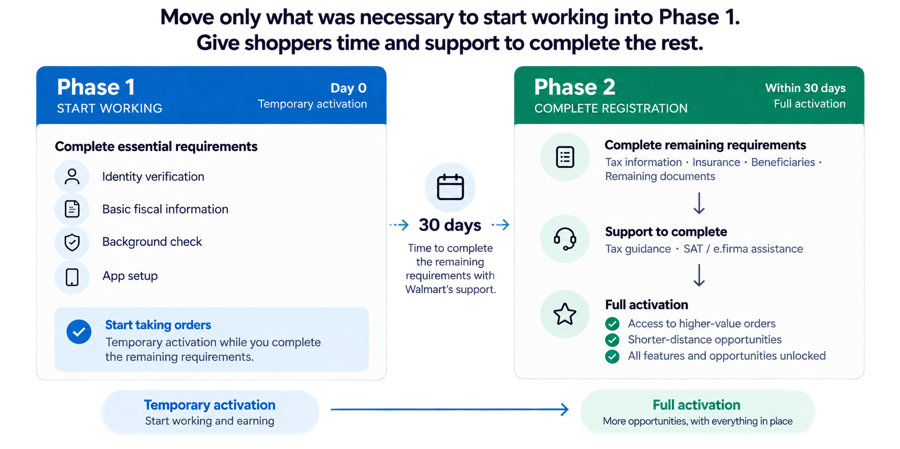

Compliance
Meet Mexican legal and fiscal requirements
Walmart · Product Discovery
Redesigning onboarding for Mexico by balancing regulatory requirements with shopper activation and operational needs.
Role: Research strategy & product discovery
The challenge
Bringing the platform to Mexico meant balancing regulatory requirements, shopper experience, and operational needs.
Meet Mexican legal and fiscal requirements
Make it possible to start working without unnecessary barriers
Maintain a reliable and scalable onboarding process
Understanding the problem
Identity, fiscal, insurance, beneficiary, and document requirements all had to be completed upfront — even when some weren't needed to begin taking orders.

My approach
Initial usability testing had already revealed friction and abandonment in the compliant onboarding flow.
Interviews and field research helped us understand registration barriers, competitor expectations, and how shoppers actually worked.
We compared leading platforms to understand how others sequenced onboarding requirements and activation.
I led the discovery work, directed shopper research and competitive analysis, joined field research, and brought the evidence together to shape the onboarding strategy.
From insights to ideas
The requirements were non-negotiable. Requiring shoppers to complete all of them before they could work wasn't.

What it enabled
The two-phase onboarding flow was incorporated into the Product backlog, while field research revealed broader opportunities in the shopper experience.
Moving concepts toward Product.
The two-phase onboarding flow was incorporated into the Product backlog.
Field research also surfaced friction after activation — including substitutions, Asset Protection checks, and order assignment. These became the focus of a cross-functional Design Sprint.
I designed and facilitated a cross-functional Design Sprint to explore solutions for the broader operational friction uncovered during field research.
Status note: The onboarding initiative was later deprioritized, with plans to revisit it in late 2026.
Next case → Building a distribution platform that could scale